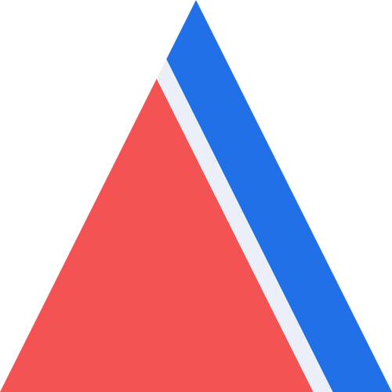

Support the project
Here are some of the ways in which you can help support the project and give back to the community.
Cite our software
If you use our software, please consider citing it in your publications. Our software is made by scientists and volunteers who generously donate their time and attention. Citations help us justify the effort that goes into building and maintaining this project.
Please cite the libraries that you used and also the Fatiando project as a whole.
Citing the libraries
Each of our libraries has a citation page that describes the best way to cite it in publications. Usually it will be a journal publication describing the software or a code archive on Zenodo. Below are the links to the citation pages:
Citing the Fatiando project
If you wish to reference the Fatiando project as a whole, please use the following reference:
Uieda, L., V. C. Oliveira Jr, and V. C. F. Barbosa (2013), Modeling the Earth with Fatiando a Terra, Proceedings of the 12th Python in Science Conference, pp. 91-98. doi:10.25080/Majora-8b375195-010
This article was peer-reviewed and is open-access. Source files and extra material for the paper are on the leouieda/scipy2013 GitHub repository.
Here is a BibTex entry for LaTeX users:
@inproceedings{Uieda2013,
series = {SciPy},
title = {Modeling the {E}arth with {F}atiando a {T}erra},
ISSN = {2575-9752},
DOI = {10.25080/majora-8b375195-010},
booktitle = {Proceedings of the 12th {P}ython in {S}cience {C}onference},
publisher = {SciPy},
author = {Uieda, Leonardo and Oliveira, Vanderlei and Barbosa, Valéria},
year = {2013},
pages = {92–98},
collection = {SciPy}
}
Get involved
Fatiando only exists because of the efforts of our community members, most of which volunteer their time and energy. One of the most important things you can do for any project is to participate in the community: ask and answer questions, share your experience, help guide the development, and make friends along the way. We gather in a few different places online, all of which are open to everyone. So come along and join the conversation!
Why participate in an open-source project like Fatiando? There is much for you to gain from your participation:
- Connect with a welcoming global community.
- Learn first-hand about software engineering.
- Solve your own problems while benefiting the community.
- Authorship on publications about our software.
There are many ways that you can contribute:
- Submitting bug reports and feature requests.
- Writing tutorials and examples.
- Answering questions in the chat and forum.
- Sharing your analysis code and examples on social media (and mentioning us).
- Fixing typos and improving to the documentation.
- Writing code for everyone to use.
Looking for a place to start? Check out our list of open good first issues across all our projects. If you see any that you’d like to take on, leave a comment on the issue.
Spread the word
We benefit greatly from recommendations and acknowledgements of usage of our software. It helps boost morale, encourage participation, and can even help with funding applications and job interviews for our community members.
Social media: Share links to this website, our GitHub repositories, project documentation, etc.
Publish your code: Used our tools in your research? Why not publish your analysis code along with the paper? Give us a shout and we’ll gladly share it on our social media.
Use our logos: Include the project logos in talks, posters, videos, and websites about work that used our tools.

Want all of them + vector graphics versions? High quality SVG and PNG versions of the logos and other variants are all available at the fatiando/logo repository.
Can’t get enough? Here is a sweet Fatiando wallpaper in 4k resolution and 16x9 aspect ratio: